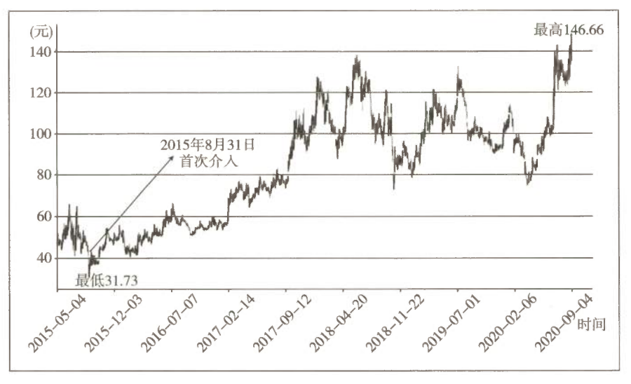
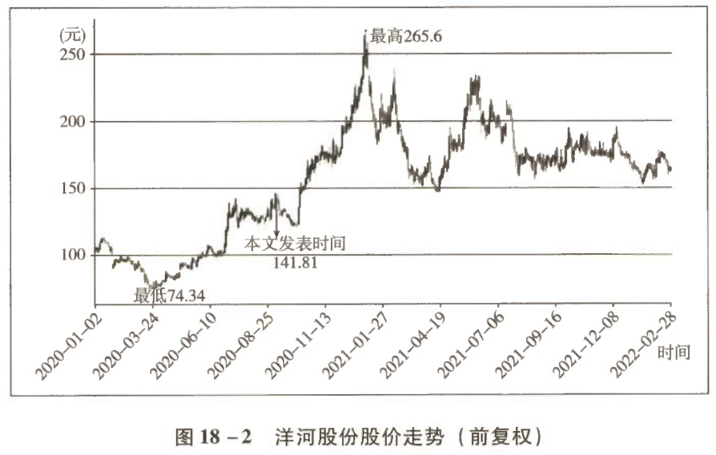

回顾对洋河股份的投资决策
本文是站在 2020 年 9 月时间节点，对洋河股份投资所做的总结性回顾。白酒行业复苏是从 2015 年年中以茅台酒、五粮液为代表的高端名酒供不应求开始的。本文首先回到投资思考的起点，展示了以理性、逻辑为基础，事前尽可能多思考各种可能性，在确定性和赔率之间，如何作出正确的投资决策，买入洋河股份的全过程。事后都易，当下最难。形成正确的思维方式是多么重要啊！
一、一次非常“愚蠢”的投资决策
说到对洋河股份的业绩判断，老唐给大家抖点儿自己“犯错”的思考历程。
“唐书房”的老朋友可能记得，老唐介入洋河是在 2015 年中报出来后的第一个交易日，也就是 2015 年 8 月 31 日首次介入。图 18-1 几乎展示了老唐身处洋河的全部经历。

图 18-1 洋河股份持仓期间股价走势（前复权）
① 收入本书时补充说明：此处 53 元指未复权价格。图中低点 31.73 元是实际低点 47.38 元的前复权。
1.1 五年后的洋河账单
| 项目 | 数据 |
|---|---|
| 初始介入价 | 约 53 元① |
| 持有时长 | 整五年（2015-08-31 至今） |
| 当前股价 | 144.81 元 |
| 期间累计每股分红 | 10.571 元 |
| 简单回报 | (144.81 + 10.57) ÷ 53 ≈ 2.93 倍 |
| 折合年化收益率 | 24% |
说明：以上不计分红再投入。
1.2 补上半句，你说不定当场吐血
听上去似乎还不错，但是老唐如果补上半句，你说不定当场吐血：2015 年 8 月 31 日，老唐第一次买入洋河的钱，来自卖出 5% 的贵州茅台。
茅台当天的股价在 190±5 元范围活动，就算卖的是全天最高价 195 元：
| 项目 | 数据 |
|---|---|
| 卖出价（按最高价算） | 195 元 |
| 当前股价 | 1770 元 |
| 期间累计每股现金分红 | 55.521 元 |
| 简单回报 | (1770 + 55.52) ÷ 195 ≈ 9.36 倍 |
| 折合年化收益率 | 56.4% |
如果当初换成的是五粮液或泸州老窖，简单回报大约是 8.5 倍和 4.5 倍。
1.3 换个说法：每 100 股茅台的五年归宿
这么对比可能不够直观，我们换个说法。当时卖出的每 100 股茅台（1.95 万元）：
| 选择 | 五年后市值 | 相对“买洋河”的差额 |
|---|---|---|
| 买成洋河股份 | 5.71 万元 | — |
| 呆坐不换（茅台） | 18.25 万元 | +12.54 万元 |
| 换成五粮液 | 16.58 万元 | +10.87 万元 |
| 换成泸州老窖 | 8.78 万元 | +3.07 万元 |
老唐卖掉的远远不止 100 股，损失自然也就不止上面这么多。现在看，这当然是一次非常“愚蠢”的决策。
1.4 那么当时为何会作出这样的决策？
很多朋友在“唐书房”问过我，我也答过多次，其中有一条问答如下。
二、白酒行业实战一线专家的一次集体错判
今天，老唐就拆开和大家聊聊，什么叫“完全有可能是浓香赢、中端赢”。
2.1 复盘：从寒冬到景气周期
站在此时，我们已经知道了本轮白酒行业性复苏，是从 2015 年年中以茅台、五粮液为代表的高端名酒供不应求开始的。确认复苏的标志性事件是五粮液带头上调出厂价，从 609 元上调至 659 元。
2013—2014 年的白酒业寒冬里，除茅台以外的大部分白酒企业都出现了营业收入和净利润的巨额下滑，不得不降价求生存。最惨的是泸州老窖：
| 公司 | 2013 年净利润 | 2014 年净利润 | 变化 |
|---|---|---|---|
| 泸州老窖 | 34.4 亿元 | 8.8 亿元 | 暴跌，比 2019 年的分众传媒还惨 |
2014 年 5 月的降价潮：
| 公司 | 产品 | 出厂价变化 | 零售指导价变化 |
|---|---|---|---|
| 五粮液 | 普五 | 729 元 → 609 元 | 1109 元 → 729 元 |
| 泸州老窖 | 国窖 1573 | — | 1589 元 → 779 元（一次性） |
更惨的是，当时的市场真实成交价甚至远低于这个降过价后的指导价。
2015 年 8 月，五粮液的市场供求状况逐步逆转，公司出手将出厂价从 609 元上调至 659 元，除茅台以外的各大名酒企业紧跟步伐上调出厂价，行业性景气周期开始。这轮景气周期持续至今（2020 年底）未见结束的迹象。
2.2 高增长是“尽在掌握”，还是意外之喜？
那么，这轮名酒企业的高增长以及股价的飙升，是管理层预见并规划的“一切尽在掌握中”，还是只是市场奉上的意外之喜呢？
要知道这个不难。在《手把手教你读财报》的第七章第二节，老唐分享了利用行业里最顶尖的、一直战斗在市场第一线的免费研究员去了解和判断市场的方法——阅读年报的“董事会报告”或者叫“经营分析”章节，理解最贴近行业一线、在行业里摸爬滚打了几十年的真正顶尖专业人士（“名酒企业董事会和核心管理层”）的观点。
2015 年三四月份，各大名酒企业 2014 年年报披露。翻看四家名酒企业的年报，我们可以看到各家公司管理层站在 2015 年初，是如何看待当时的市场状况和未来趋势的。由于全文太长，老唐只摘录几句要点，感兴趣的朋友们可以自己翻看财报原文。
| 公司 | 2014 年年报披露日期 | 出处页码 | 章节 |
|---|---|---|---|
| 泸州老窖 | 2015 年 3 月 31 日 | 第 20 页 | 行业竞争格局和发展趋势 |
| 五粮液 | 2015 年 4 月 17 日 | 第 14 页 | 行业竞争格局和发展趋势 |
| 贵州茅台 | 2015 年 4 月 18 日 | 第 11 页 | 行业竞争格局和发展趋势 |
| 洋河股份 | 2015 年 4 月 29 日 | 第 23 页 | 行业竞争格局和发展趋势 |
2.3 四大名酒掌舵人的原话摘录
贵州茅台（2015-04-18 披露）：
白酒行业将进入新常态：一是进入低速增长的新常态。二是回归大众消费的新常态，大众消费将成为主流。三是互联网实现智能化卖酒的新常态。 — 贵州茅台 2014 年年报
五粮液（2015-04-17 披露）：
依靠高端白酒价格上行拉动整个行业爆发式增长的时代已经一去不复返，加之生产经营成本持续上涨，行业内企业利润普遍呈现下降趋势。
“互联网+”已成为大趋势，以电子商务为代表的新兴渠道不断成熟壮大，白酒行业传统渠道面临重大挑战，业内企业开始以大数据营销、互联网思维等为新营销的理念，推动整个行业渠道多元化发展，更加贴近消费者市场。
年轻消费群体快速崛起，消费需求更加多元。 — 五粮液 2014 年年报
洋河股份（2015-04-29 披露）：
2015 年，传统销售渠道市场竞争面临压力，产业结构和销售模式的深入调整将成为行业的巨大挑战，同时主打健康品牌和年轻消费者的市场竞争将进一步加剧。
行业龙头企业开始全面消化市场库存，稳定老产品价格体系，新品融入大众和商务消费主流。
在“短期矫枉过正，中期理性回归，长期商众凸显”基础上，白酒行业进入理性竞争新常态，新常态下行业竞争将走向更加理性和平稳的新阶段。 — 洋河股份 2014 年年报
泸州老窖（2015-03-31 披露）：
消费者将越来越注重产品性价比。
行业高、中、低产品均还供大于求，竞争加剧，中低档产品市场的激烈竞争可能导致部分企业退出加快。 — 泸州老窖 2014 年年报
2.4 提炼：六条管理层共识
如果我们仔细阅读上面四家名酒企业掌舵人的观点，可以很轻易地发现大致有这么几个共识：
依然很困难
2015 年及之后依然很困难
市场供大于求
市场仍然供大于求
中低速增长
未来将趋向于中低速增长
消费年轻化
白酒消费的趋势是年轻化
大众消费主导
未来的主要增长将来自注重性价比的大众消费
中低端刚性增长
中低端产品刚性增长
中低端、大众消费、年轻化、互联网销售，这些字眼让你想起了谁呢？
当然是洋河啊！通吃中低端（其中又细分为中高端、中端和中低端）的全国性酒企，一贯走年轻化、现代化路线，注重网络推广的酒企，是谁？洋河！
于是，某蠢蛋唐在 2016 年初白纸黑字写下过这样的判断：
2.5 结果：预期与现实完全相反
然而，站在 2020 年底回看，我们发现这四家名酒企业管理层居然集体看走眼，蠢蛋唐的脸也是被打得啪啪作响。
| 维度 | 2015 年初的一致预期 | 2015—2020 年的实际结果 |
|---|---|---|
| 增长速度 | 中低速增长 | 真正的高速增长 |
| 增长来源 | 中低端带来 | 主要由高端酒供不应求造成 |
| 股价表现 | （隐含利好中端） | 主打高端的茅台、五粮液、泸州老窖涨幅远高于主打中端的洋河股份 |
实际上，如果我们继续翻看后两年的财报，会发现直到 2017 年初，各大名酒企业管理层对市场的看法才算陆续转变过来。老唐就不摘录了，感兴趣的朋友们可以自己查阅。
三、投资的关键是理性、逻辑
以上这个集体错判，来自国内实战第一线真正的行业专家。在老唐看来，它至少说明三个很有价值的问题。
3.1 第一：市场变化很难预测，其发展存在很多偶然性
即便是行业内专家也同样可能失之毫厘、谬以千里。今天，贵州茅台、五粮液、泸州老窖的产品供不应求、股价飙升的现状，是市场不断变化后的结果，并非注定如此的必然。
所以，站在今天忏悔自己为什么不在 2015 年全仓贵州茅台，只是犯了从后视镜看问题的错误。
这种反思有害无益，它是从结果倒推出来的，并不能用以指导我们未来的投资决策。同样，谁要站在今天，说自己比四大名酒企业管理层看得更远、更高、更清楚，早在 2015 年初就已经看清高端白酒必然爆发的前途，从而下注高端，获得高额回报，老唐估计他大概率是头脑不清楚，自己骗自己，是选择性地记住了正确面，将“蒙对”阐述成“看对”了。
3.2 第二：优秀的商业模式具有强大的容错性
对于具备以下特性的酒企，即便是管理层判断错了，企业也有动态调整的时间和空间：
产品差异化
难以被简单替代
产品自带提价增量属性
无须扩产也能增长
行业变化缓慢
留出纠错的时间窗口
存货不贬值
判断失误不造成硬损失
高端白酒企业高管们在 2015 年初的集体错判，并没有影响他们成功搭上本轮需求飙升的快车，给股东创造优异的回报。
即便是没有站在风口的洋河股份，五年里也实现了年化 24% 的优异成绩，这成绩甚至超过了《巴芒演义》里绝大多数“股神”的长期记录。
3.3 第三：投资的关键是理性，是逻辑
如同《巴芒演义》第 168～170 页阐述的索普买入可转债同时卖空等额股票的例子一样。索普的决策出发点是：未来这家企业无论是变好了还是破产了，甚至是维持原样不动，索普都能 100% 确保赚钱。
如果未来这家企业真的跌破产了，我跑去问索普：“为什么你要买可转债呢？要是你只放空股票，不买可转债，你明明可以多赚几百倍的？”索普恐怕连一个卫生球也不会抛给我，只会在心中默默地嘀咕一句“懒得理你”。
这个思维方式非常重要，但我不确定我是否表述清楚了，或者你是否认真对待了。希望不要因为文章免费，得到个一笑而过的待遇。
四、补充说明
老唐从 2015 年 8 月 31 日首次介入洋河股份，之后只有买入没有卖出。截至 2022 年 2 月底，持有仓位 22%，是实盘中仅次于腾讯控股的第二大持股。
